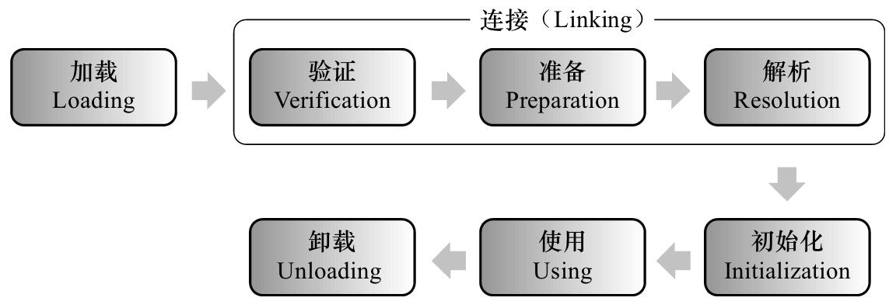

类加载机制
JVM 类加载机制分为：加载，验证，准备，解析，初始化。

加载
这个阶段会在内存中生成一个代表这个类的 java.lang.Class 对象，作为方法区这个类的各种数据的入口。
注：不一定从 Class 文件获取，既可以从 ZIP 包中读取（比如 jar 包和 war 包），也可以在运行时计算生成（动态代理），也可以由其它文件生成（比如将 JSP 文件转换成对应的 Class 类）。
验证
确保 Class 文件的字节流中包含的信息符合当前虚拟机的要求，并且不会危害虚拟机自身的安全。
准备
正式为类变量分配内存并设置类变量的初始值阶段，即在方法区中分配这些变量所使用的内存空间。
注意这里所说的初始值概念，比如一个类变量定义为：
1 | // 变量 v 在准备阶段过后的初始值为 0 而不是 8080 |
但如果声明为：
1 | // 在编译阶段会为变量 v 生成 ConstantValue 属性 |
解析
该阶段指虚拟机将常量池中的符号引用替换为直接引用的过程。
符号引用就是 Class 文件中的 CONSTANT_Class_info、CONSTANT_Field_info、CONSTANT_Method_info 等类型的常量。
符号引用和直接引用的概念：
- 符号引用与虚拟机实现的布局无关，引用的目标并不一定已经加载到内存中。各种虚拟机实现的内存布局可以各不相同，但是它们能接受的符号引用必须是一致的，因为符号引用的字面量形式明确定义在 Java 虚拟机规范的 Class 文件格式中。
- 直接引用可以是指向目标的指针，相对偏移量或是一个能间接定位到目标的句柄。如果有直接引用，那引用的目标必定已经在内存中。
初始化
该阶段是类加载最后一个阶段，前面的类加载阶段之后，除了在加载阶段可以自定义类加载器以外，其它操作都由 JVM 主导。到了初始阶段，才开始真正执行类中定义的 Java 程序代码。
初始化阶段是执行类构造器
注意：如果一个类中没有对静态变量赋值也没有静态语句块，那么编译器可以不为这个类生成
注意以下几种情况不会执行类初始化：
- 通过子类引用父类的静态字段，只会触发父类的初始化，而不会触发子类的初始化。
- 定义对象数组，不会触发该类的初始化。
- 常量在编译期间会存入调用类的常量池中，本质上并没有直接引用定义常量的类，不会触发定义常量所在的类。
- 通过类名获取 Class 对象，不会触发类的初始化。
- 通过 Class.forName 加载指定类时，如果指定参数 initialize为false 时，也不会触发类初始化，其实这个参数是告诉虚拟机，是否要对类进行初始化。
- 通过 ClassLoader 默认的 loadClass 方法，不会触发初始化动作。
类加载器种类
从 JVM 的角度，只有两种类加载器：
启动类加载器（Bootstrap ClassLoader）：该类加载器由 C++ 语言实现（HotSpot），是虚拟机自身的一部分。
其他的类加载器：这些类加载器由 Java 语言实现，独立于虚拟机外部，并且全部继承自 java.lang.ClassLoader。
从开发者的角度，类加载器可以细分为：
启动类加载器：负责将 Java_Home/lib 下面的类库加载到内存中（比如 rt.jar）。由于启动类加载器涉及到虚拟机本地实现细节，开发者无法直接获取到启动类加载器的引用，所以不允许直接通过引用进行操作。
标准扩展（Extension）类加载器：由 ExtClassLoader（sun.misc.Launcher$ExtClassLoader）实现，负责将 Java_Home/lib/ext 或者由系统变量 java.ext.dir 指定位置中的类库加载到内存中。开发者可以直接使用标准扩展类加载器。
应用程序（Application）类加载器：由 AppClassLoader（sun.misc.Launcher$AppClassLoader）实现，负责将系统类路径（CLASSPATH）中指定的类库加载到内存中。开发者可以直接使用系统类加载器。由于该类加载器是 ClassLoader 中的 getSystemClassLoader() 方法的返回值，因此一般称为系统（System）加载器。
除此之外，还有自定义的类加载器，它们之间的层次关系被称为类加载器的双亲委派模型。该模型要求除了顶层的启动类加载器外，其余的类加载器都应该有自己的父类加载器，而这种父子关系一般通过组合（Composition）关系来实现，而不是通过继承（Inheritance）。

双亲委派
双亲委派模型过程
某个特定的类加载器在接到加载类的请求时，首先将加载任务委托给父类加载器，依次递归，如果父类加载器可以完成类加载任务，就成功返回；只有父类加载器无法完成此加载任务时，才自己去加载。
使用双亲委派模型的好处在于 Java 类随着它的类加载器一起具备了一种带有优先级的层次关系。例如类 java.lang.Object，它存在在 rt.jar 中，无论哪一个类加载器要加载这个类，最终都是委派给处于模型最顶端的 Bootstrap ClassLoader 进行加载，因此 Object 类在程序的各种类加载器环境中都是同一个类。相反，如果没有双亲委派模型而是由各个类加载器自行加载的话，如果用户编写了一个 java.lang.Object 的同名类并放在 ClassPath 中，那系统中将会出现多个不同的 Object 类，程序将混乱。因此，如果开发者尝试编写一个与 rt.jar 类库中重名的 Java 类，可以正常编译，但是永远无法被加载运行。
双亲委派模型的系统实现
在 java.lang.ClassLoader 的 loadClass() 方法中，先检查是否已经被加载过，若没有加载则调用父类加载器的 loadClass() 方法，若父加载器为 null 则默认使用启动类加载器作为父加载器。如果父加载失败，则在抛出 ClassNotFoundException 异常后，再调用自己的 findClass() 方法进行加载。
1 | protected synchronized Class<?> loadClass(String name,boolean resolve) throws ClassNotFoundException{ |
注：双亲委派模型是 Java 设计者推荐给开发者的类加载器的实现方式，并不是强制规定的。大多数的类加载器都遵循这个模型，但也有较大规模破坏双亲模型的情况，比如线程上下文类加载器（Thread Context ClassLoader），具体可参见周志明著《深入理解Java虚拟机》。